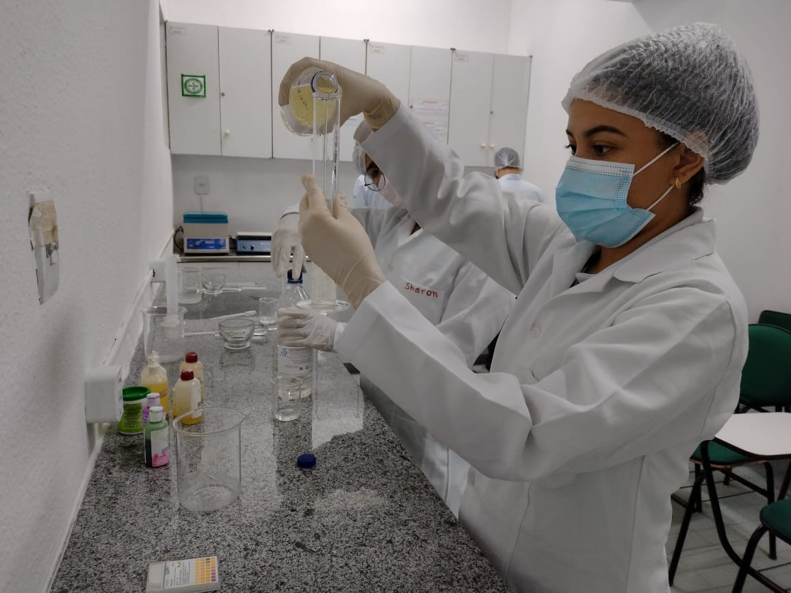

Técnico em Fármacia
Sobre o curso:

O curso Técnico em Farmácia forma profissionais que possam atuar com medicamentos, tanto em sua manipulação como no armazenamento de processos administrativos. A profissão visa garantir que medicamentos sejam manipulados da maneira correta e seguindo todas as determinações legais.
O que se aprende neste curso?
Um curso técnico de farmácia é mais curto e focado do que uma graduação em farmácia. Geralmente, um curso técnico de farmácia prepara os alunos para trabalhar em cargos de nível técnico na área farmacêutica. Alguns tópicos e habilidades comuns abordados em um curso técnico de farmácia podem incluir:
• Dispensação de Medicamentos: Aprendizado sobre como preparar e dispensar medicamentos sob a supervisão de um farmacêutico.
• Terminologia Médica: Compreensão dos termos e linguagem utilizados na área da saúde.
• Farmacologia Básica: Estudo dos princípios básicos de como os medicamentos funcionam no corpo.
• Administração de Medicamentos: Conhecimento sobre as diferentes formas de administrar medicamentos, como oral, intravenosa, intramuscular, etc.
• Ética e Legislação Farmacêutica: Compreensão das regras e regulamentos que regem a prática farmacêutica.
• Farmácia Hospitalar ou Comunitária: Treinamento em como funcionam farmácias hospitalares e comunitárias.
• Controle de Estoque: Habilidades relacionadas à gestão e controle de estoque de medicamentos.
• Atendimento ao Cliente: Desenvolvimento de habilidades para interagir com pacientes e clientes.
• Segurança e Higiene no Trabalho: Conhecimento sobre práticas seguras no ambiente de trabalho farmacêutico.
• Técnicas de Laboratório: Treinamento em técnicas laboratoriais usadas em análises farmacêuticas.
É importante observar que as especificidades do currículo de um curso técnico de farmácia podem variar dependendo do programa educacional e do país onde o curso é ministrado. Geralmente, esses cursos preparam os alunos para cargos técnicos em farmácias, hospitais, laboratórios de análises clínicas e na indústria farmacêutica.